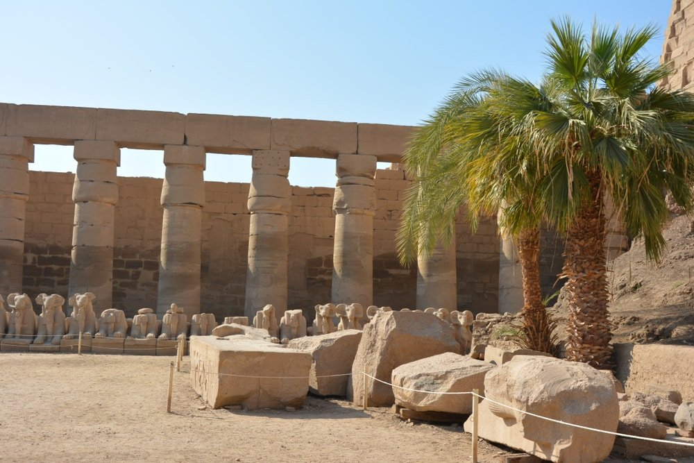
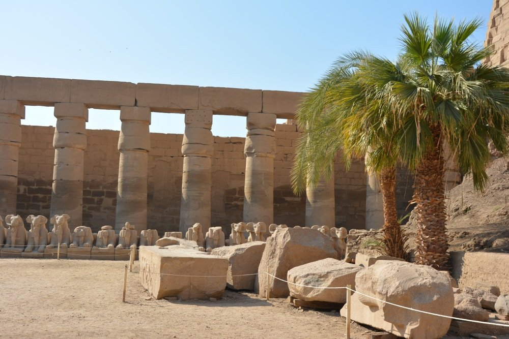

La vallée des Rois
Le musée de Karnak


Je vais tout simplement commencer par le début de ce magnifique séjour un dimanche 14 février 2016 ! Le dimanche 14 février 2016, nous étions à l’aéroport d’Istanbul. Nous avons quittons les températures d’hiver de la Turquie pour aller se réchauffer en Egypte. Départ à 13h00, la salle d’embarquement n’était pas vraiment remplie. Les passagers sont essentiellement des locaux. Un grand groupe (identifiable avec des foulards et badges de couleur verte) effectue ce trajet pour se rendre à la Mecque. Ils ne feront donc qu’une escale au Caire. Nous voila plongés dans l’ambiance et ce dès la salle d’embarquement. L’un des voyageurs se lève et invite ses amis à se joindre à lui pour la prière La moquette grise de la salle d’embarquement est recouverte d’une dizaine de tapis d’orient positionnés en direction de la Mecque ! Enfin, plutôt face aux vitres des pistes de décollages et atterrissages. On n’avait encore jamais vécu ce genre de scène dans un aéroport ! Sans vraiment faire le lien avec cette anecdote, je ressens une petite appréhension avant de monter dans l’avion. Oui oui, une petite angoisse à laquelle je ne suis pourtant pas habituée ! Je m’en veux d’avoir eu une pensée négative. D’autant plus qu’au moment où je vous écris, je commence à me souvenir de toutes ces belles images que j’ai vu en EGYPTE. Je me remémore les merveilleux sites explorés, les paysages si paisibles du Nil et ces visages d’égyptiens rencontrés. Mais dans ces moments, il est difficile de se raisonner.. Malheureusement, les médias y sont pour beaucoup. Bien installés dans l’avion, notre voisin commence à engager la conversation. Très sympathique, cet égyptien nous raconte un petit bout de sa vie et en profite pour nous glisser sa surprise de Saint-Valentin pour sa femme. Et oui ! nous sommes toujours le 14 février et figurez vous que j’ai été trés surprise de voir autant d’engouement pour cette fête commerciale tant en Turquie qu’en Egypte. Détendue plus que jamais, je commence à trépigner d’impatience lorsque j’aperçois depuis le hublot le Nil. Le voyage s’est finalement déroulé sans stress et dans les temps. Un vol parfait et rapide depuis Istanbul. En revanche, je ne vous cache pas que l’arrivée au Caire était un mélange d’excitation et d’appréhension. A peine descendue de l’avion, nous empruntons un tapis roulant au bout duquel nous apercevons un grand sourire. Un grand sourire blanc, des yeux noirs en Amendes appartenant à Ahmed. Notre correspondant Ahmed nous attendait avec sa pancarte au logo de l’agence voyageurs du monde avant même que nous passions les douanes. L’aéroport était très grand et « désert ». Alors, vous me direz on est dans le thème ! Certes, mais il y avait quand même très peu de monde. Habituellement, nous sommes adeptes des voyages itinérants. Jamais planifié longuement à l’avance, nous achetons nos billets d’avion, location de voitures, sac à dos et c’est parti … Passer par une agence était une grande première ! Une grande première à laquelle on peut très vite prendre goût. Pour une destination comme l’Egypte et notamment pour ceux qui hésitent à découvrir ce pays, il est vraiment rassurant et confortable de passer par voyageurs du monde. Voyager en Egypte était un rêve mais voyager en Egypte et remonter le Nil à bord de l’un des plus ancien bateau à vapeur, en était un autre. Il y a tant à découvrir en Egypte, autant de possibilités d’activités que de sites pharaoniques à contempler. Ce voyage a vraiment frôler la perfection …Je pèse mes mots pour ne pas toujours répéter que c’était parfait ! mais bon, pour tout vous avouer, c’était réellement extraordinaire ! Nous partons donc si vous me suivez toujours, avec nos correspondant Ahmed et Mohamed en direction de notre Hôtel. En voiture, nous passons par le périphérique et découvrons depuis notre fenêtre des quartiers fraichements implantés à l’architecture orientale. Ahmed nous explique qu’il s’agit des nouveaux quartiers « riches » pour essayer de déconcentrer la population du centre ville. C’est si peu dire, Le Caire est une très grande ville Cela semble complètement surréaliste mais on s’en rend très vite compte sur les routes. La circulation est digne des pires jours de pointes dans les grandes villes et surtout les klaxons aussi nombreux qu’inutiles ! Tout le monde klaxonne tout le temps et pour tout. Plusieurs files de circulation sont « dessinées sur le périphe ». On circule entre de vieilles voitures, des ânes, des charrettes et des piétons.
Visiter Louxor c’est comme ouvrir un livre d’Histoire ! En effet, la ville est riche de nombreux édifices patrimoniaux qui méritant d’être vus. Initié par Aménophis III dans la deuxième moitié du XIVème siècle avant J-C, le temple de Louxor a été complété une centaine d’années après, par Ramsès II. Il était dédié au dieu Amon et, pour lui rendre hommage, la fête d’Opet avait lieu chaque année pendant une dizaine de jours. Il a ensuite subi des modifications, notamment durant la période d’occupation romaine, qui y bâtirent une chapelle. Les musulmans ont ensuite érigé une mosquée, qui est toujours en service de nos jours. Le temple est constitué de plusieurs parties, introduites par la majestueuse allée des sphinx. Après avoir traversé la cour de Necanébo, on entre dans le domaine de Ramsès II par une porte flanquée d’un pylône monumental. La promenade continue dans l’enceinte d’une longue colonnade, qui mène à la cour, puis au sanctuaire d’Aménophis III.
 

Croisière sur le Nil à bord d’une dahabieh, un petit bateau à fond plat typiquement égyptien.
Entre Louxor et Assouan, la vallée du Nil offre aux voyageurs quelques-uns des plus beaux vestiges de l'Égypte antique.les grands navires de croisière doivent s’arrêter aux embarcadères définis, les dahabieh peuvent quant à elles se faufiler vers des sites plus inaccessibles. Ces bateaux typiques à fond plat peuvent accoster où bon leur semble, ponton ou pas ! Sentez-vous ce petit parfum d’interdit ? C’est l’occasion de découvrir, en plus des grands sites incontournables, d’autres merveilles méconnues du temps des pharaons, mais aussi la vie rurale sur les rives du Nil.
Deux visages de l’Égypte, résolument divins.